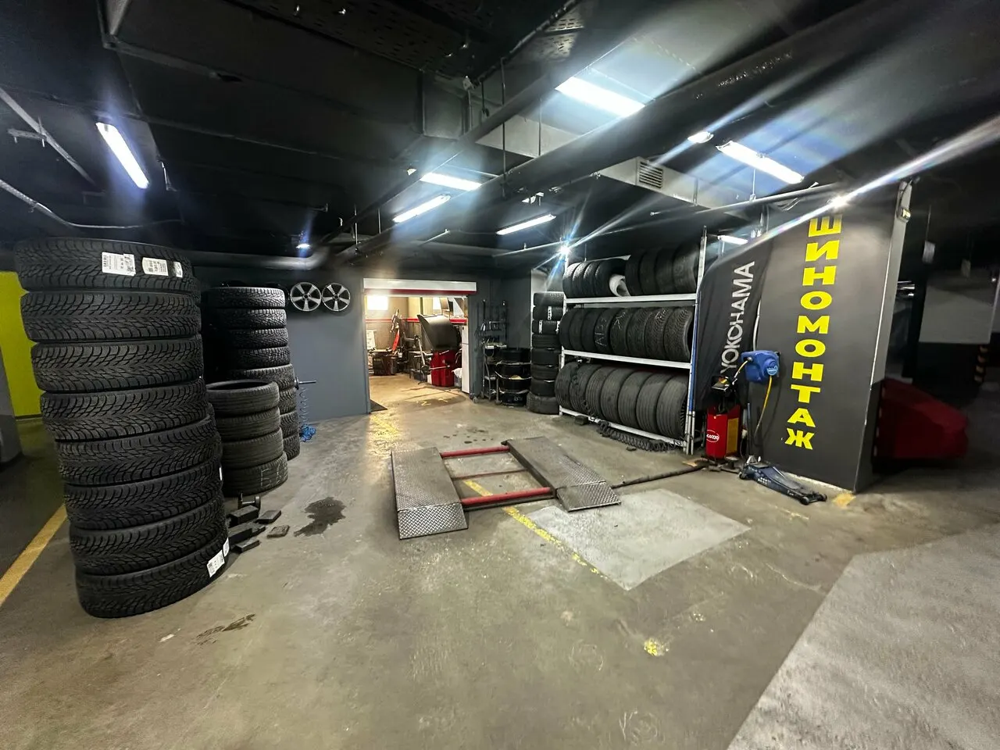
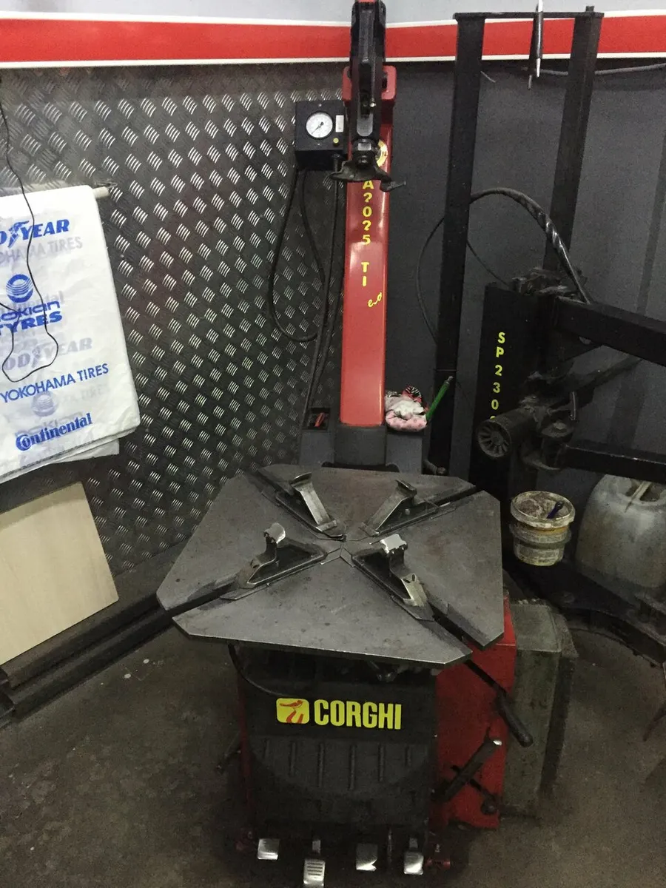
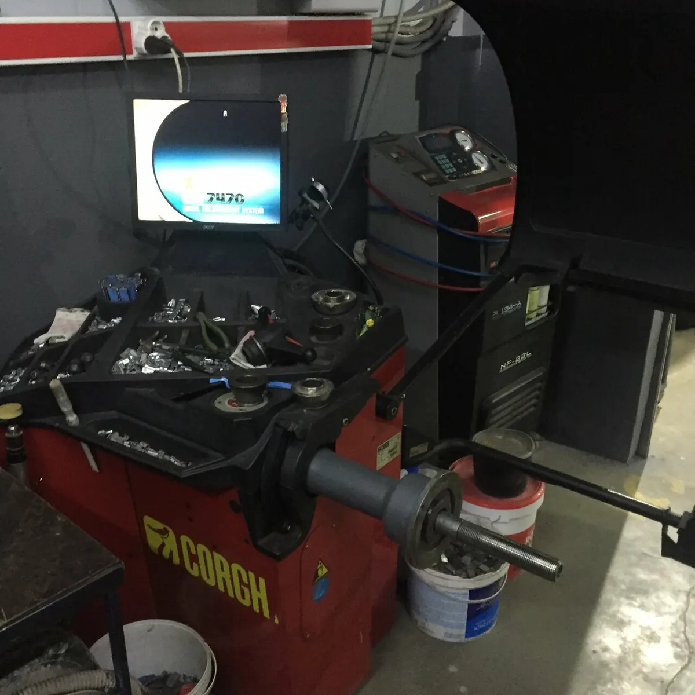
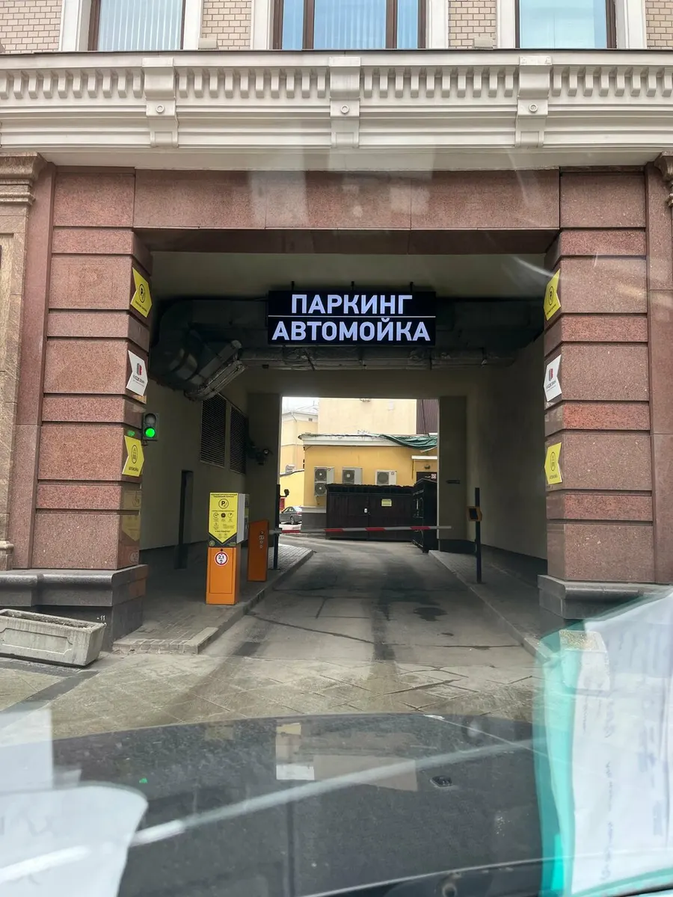

Шиномонтаж · Мясницкая, 11, метро Лубянка · Москва
Шиномонтаж в центре Москвы, у Лубянки
Заезжайте в паркинг на Мясницкой, 11, делаем шины и балансировку. Цены по диаметрам от R14 до R21 открыты ниже, позвоните и договоримся на удобное время.
- 4,6 на Яндекс.Картах, 16 отзывов
- Пн-Пт 08:00-21:00, Сб-Вс 09:00-20:00
- Клиенты возвращаются годами, по отзывам

Цены по диаметрам
Цены с карточки на Яндекс.Картах: снять и поставить колесо, монтаж и демонтаж шины, балансировка. Что входит в цену (одно колесо или комплект), подскажем по телефону, точную сумму назовём до начала работ.
Шиномонтаж «под ключ»
- R141 840 ₽
- R152 040 ₽
- R162 320 ₽
- R173 000 ₽
- R183 600 ₽
- R194 200 ₽
- R204 800 ₽
- R215 520 ₽
Датчики давления и кондиционер
- Датчик давления шинуниверсальный перепрограммируемый Autel TPMS, доступная замена оригинальных датчиков2 250 ₽
- Ремкомплект датчика давления1 штука 300 ₽, комплект из 4 штук 1400 ₽300 ₽
- Ремкомплект датчика Mitsubishi400 ₽
- Заправка автокондиционера2 000 ₽
Другие работы
- Ремонт проколауточнить
- Замена вентиляуточнить
- Правка литых дисковуточнить
- Хранение шин, сезонуточнить
Как проходит визит
- 01
Позвоните
Скажете размер колёс, договоримся на удобное время. +7 (985) 795-76-75.
- 02
Заезжайте в паркинг на Мясницкой, 11
Через арку во двор, потом пандус вниз на этаж -2.
- 03
Мастера делают работу
Снимают колёса, меняют шины, балансируют на станке.
- 04
Называем итог до оплаты
Что сделали и сколько это стоит, оплата картой, наличными или переводом.



Что вы получите
Стационарная точка в центре
Не выездной шиномонтаж: адрес Мясницкая, 11, этаж -2, метро Лубянка 370 м.
Цены на сайте
Цены по диаметрам от R14 до R21 открыты, не нужно звонить, чтобы узнать порядок суммы.
Много услуг в одном месте
Балансировка, вулканизация, хранение шин, продажа шин и дисков, датчики давления, заправка кондиционера.
Удобно заехать
Лифт, пандус, вход доступен для инвалидной коляски, можно с животными.
Отзывы с Яндекс.Карт
«Проколол колесо в 8-30 утра, начал искать где отремонтировать колесо, звонил в шиномонтажи, оказалось, что большинство из них выездные и проблему решить не могу, а другие сказали, что мастера ждать до 10-11 утра... Позвонил, договорился, сделали оперативно и по цене прекрасно. Огромное вам спасибо.»
Nikita · 17 мая 2025
«Пользуюсь услугами этого шиномонтажа с 2008 года, когда ребята еще работали на Старосадском переулке. Всегда отличный сервис, делают все быстро, доброжелательные. Очень рекомендую!»
Яна Хмелевцова · 10 мая 2026
«Спасли меня с проколотым колесом, быстро, качественно и недорого»
Посетитель Яндекс Карт · 23 декабря 2025
Отзывы с карточки на Яндекс.Картах, без правок.
Частые вопросы
Где вы находитесь?
Москва, Мясницкая улица, 11, этаж -2, в подземном паркинге. Метро «Лубянка» 370 м, остановка «Кривоколенный переулок» 128 м.
Когда работаете?
В будни с 8:00 до 21:00, в выходные с 9:00 до 20:00.
Нужно ли записываться?
Лучше позвонить и договориться на удобное время.
Хранение шин есть?
Да, хранение шин есть. Условия и цену назовём по телефону.
Как оплатить?
Картой, наличными, банковским переводом, после работы. Есть дисконтная система скидок, условия у мастера.
Позвоните, договоримся на удобное время
- Адрес
- Москва, Мясницкая улица, 11, этаж -2, Москва
- Часы
- Пн-Пт 08:00-21:00, Сб-Вс 09:00-20:00
- Телефон
- +7 (985) 795-76-75